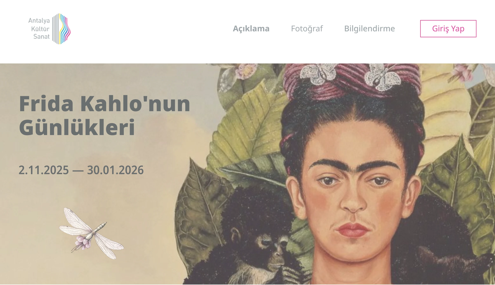
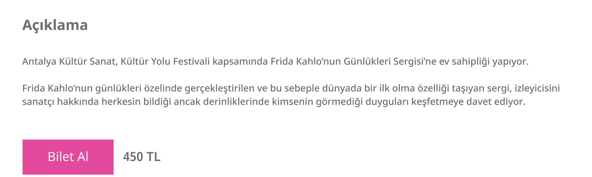
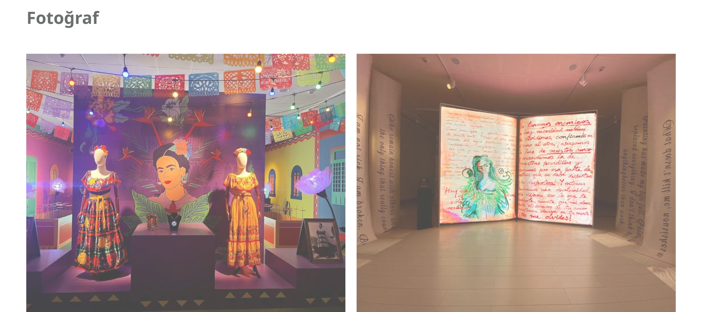
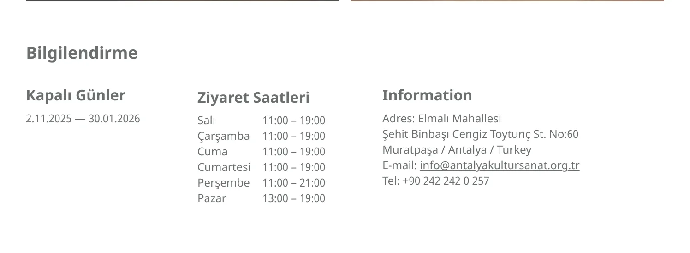
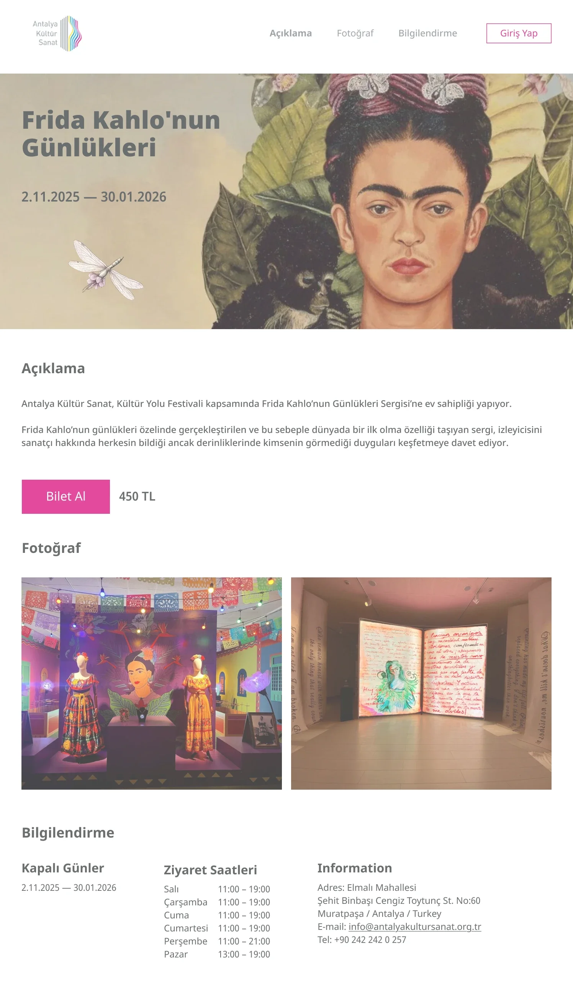
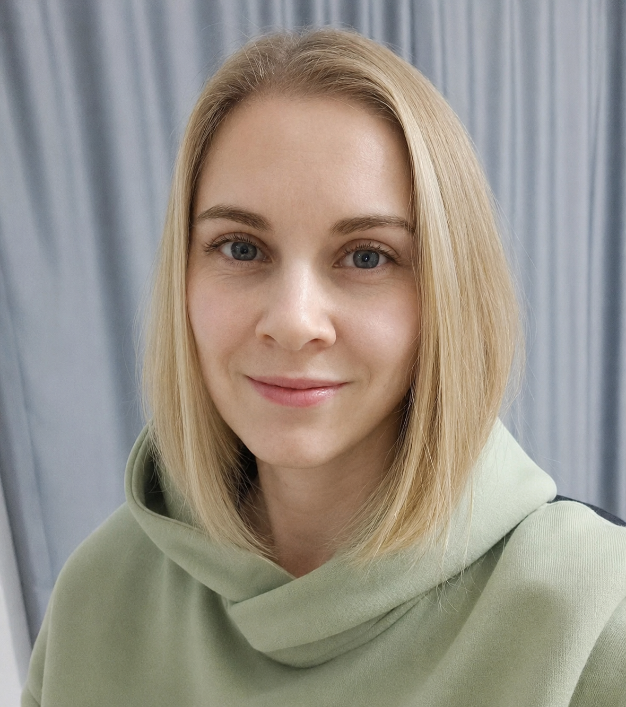

Frida Kahlo’nun
Günlükleri
Афиша выставки «Дневники Фриды Кало» для культурного центра Antalya Kültür Sanat. Всё, что нужно посетителю, — на одной странице.

01 — О проекте
Выставка, на которую хочется пойти
Задача
Спроектировать страницу афиши выставки для сайта культурного центра в Анталье: описание, фото экспозиции, расписание, контакты и покупка билета.
Аудитория
Жители и гости Антальи, которые ищут, куда сходить. Приходят на страницу с конкретными вопросами и хотят быстро получить ответы.
Идея
Работы Фриды задают настроение, интерфейс отходит на второй план. Цвета взяты из логотипа и основного сайта центра, яркая фуксия — только для покупки билета.
Принцип
Четыре вопроса посетителя — четыре блока страницы
Изучила, как устроены страницы событий у музеев и культурных центров, и оставила только то, что помогает принять решение и прийти.
02 — Информационная архитектура
Вопрос → блок
?
Что это за выставка?
Açıklama — название, даты и короткое описание.
?
Как она выглядит?
Fotoğraf — крупные фотографии экспозиции.
?
Когда можно прийти?
Bilgilendirme — дни, часы работы, адрес и контакты.
₺
Сколько стоит?
Bilet Al · 450 TL — цена рядом с кнопкой покупки.
03 — Решения
Атмосфера сверху, практика — ниже
Автопортрет на весь экран
Работа Фриды сразу передаёт настроение. Название и даты вынесены крупно слева, на спокойной части изображения, чтобы текст хорошо читался.
- Пункты меню повторяют разделы страницы и работают как якоря
- Радужный логотип центра задаёт акцентный цвет
Кнопка — в момент наибольшего интереса
«Bilet Al» стоит сразу после описания выставки. Цена рядом с кнопкой: не нужно искать стоимость по странице.

Фото продают впечатление
Две крупные фотографии показывают разные части экспозиции — костюмы и инсталляцию из страниц дневника. Понятно, что это погружение, а не просто картины на стенах.

Часы работы — таблицей
Двухколоночная таблица «день — время»: легко найти свой день и заметить исключения.
| Salı — Cumartesi | 11:00 – 19:00 |
| Perşembe | 11:00 – 21:00 |
| Pazar | 13:00 – 19:00 |

04 — Визуальный язык
Цвета из айдентики культурного центра
Палитру я не придумывала с нуля: цвета взяты из логотипа Antalya Kültür Sanat и с основного сайта культурного центра, чтобы страница афиши выглядела его частью. Фуксия из радужного логотипа — только для покупки билета и входа. Сдержанный серый текст и белый фон — как на основном сайте, чтобы интерфейс не спорил с работами художницы.
Фуксия
#E34A9D
Из логотипа · Bilet Al, Giriş Yap
Графитовый
#6A6C6B
С основного сайта · текст
Белый
#FFFFFF
С основного сайта · фон
Ğş
Турецкий интерфейс
Все тексты на турецком для местной аудитории. Шрифт выбран с полной поддержкой турецких символов: ğ, ş, ı, ç, ö, ü.
05 — Итог
Вся информация — на одной странице
Макет целиком
Нажмите «+», чтобы открыть макет целиком

Нужна страница, на которой посетитель сразу находит ответы? Напишите — обсудим ваш проект.
